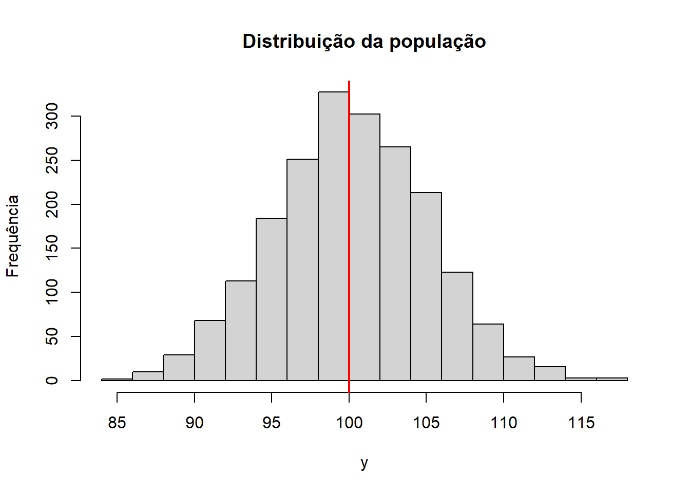
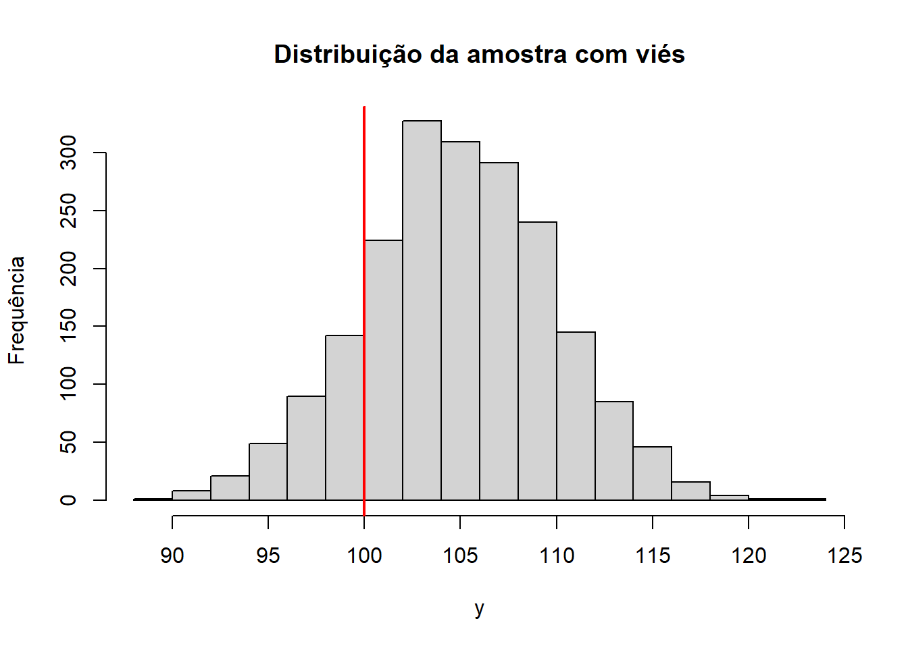

3.1.1 Groves, R. M., Fowler Jr, F. J., Couper, M. P., Lepkowski, J. M., Singer, E., & Tourangeau, R. (2011). Survey methodology. John Wiley & Sons. Cap. 2.
Sample surveys combine the answers of individual respondents in statistical computing steps to construct statistics describing all persons in the sample. At this point, a survey is one step away from its goal – the description of characteristics of a larger population from which the sample was drawn. (p. 40)
There two inferential steps are central to the two needed characteristics of a survey:
Answers people give must accurately describe characteristics of the respondents.
The subset of persons participating in the survey must have characteristics similar to those of a larger population.
When either of these two conditions is not met, the survey statistics are subject to “error”. The use of the term “error” does not imply mistakes in the colloquial sense. Instead, it refers to deviations of what is desired in the survey process from what is attained. “Measurement errors” or “errors of observation” will pertain to deviations from answers given to a survey question and the underlying attribute being measured. “Errors of nonobservation” will pertain to the deviations of a statistic estimated on a sample from that on the full population. (p. 40-41)
[About constructs] Some constructs are more abstract than others. The Survey of Consumers (SOC) measures short-term optimism about one’s financial status. This is an attitudinal state of the person, which cannot be directly observed by another person. It is internal to the person, perhaps having aspects that are highly variable within or across persons […]. In contrast, the National Survey on Drug Use and Health (NSDUH) measures consumption of beer in the last month. (p. 42)
However, survey measurements are often questions posed to a respondent, using words […]. The critical task for measurement is to design questions that produce answers reflecting perfectly the constructs we are trying to measure. These questions can be communicated orally […] or visually […]. Sometimes, however, they are observations made by the interviewer. […]. (p. 42-43)
Sometimes, the responses are provided as part of the question, and the task of the respondent is to choose from the proffered categories. Other times, only the question is presented, and the respondents must generate an answer in their own words. Sometimes, a respondent fails to provide a response to a measurement attempt. This complicates the computation of statistics involving that measure. (p. 43)
O texto comenta sobre detecção de anomalias on the fly, permitindo que o respondente corrija o erro. Por exemplo, se o usuário indica que nasceu em 1890.
The frame population is the set of target population members that has a chance to be selected into the survey sample. In a simple case, the “sampling frame” is a list of all units (e.g., people and employers) in the target population. Sometimes, however, the sampling frame is a set of units imperfectly linked to the population members. FOr example, the SOC has as its target population the U.S. adult household population. It uses as its sampling frame a list of telephone numbers. (p. 44)
A sample is selected from a sampling frame. This sample is the group from which measurements will be sought. In many cases, the sample will be only a very small fraction of the sampling frame (and, therefore, of the target population). (p. 44)
Agora, pensando do ponto de vista de qualidade de um survey…:
The job of a survey designer is to minimize error in survey statistics by making design and estimation choices that minimize the gap between two successive stages of the survey process. This framework is sometimes labeled the “total survey error” framework or “total survey error” paradigm. (p. 47)
In short, the underlying target attribute we are attempting to measure is \(\mu_i\), but instead we use an imperfect indicator, \(Y_i\), which departs from the target because of imperfections in the measurement. When we apply the measurement, there are problems of administration. Instead of obtaining the answer \(Y_i\), we obtain instead \(y_i\), the response to the measurement. We attempt to repair the weakness of the measurement through an editing step, and obtain as a result \(y_{ip}\), which we call the edited response (the subscript \(p\) stands for “postdata collection”). (p. 47)
In statistical terms, the notion of validity lies at the level of an individual respondent. It notes that the construct (even though it may not be easily observed or observed at all) has some value associated with the \(i\)th person in the population, traditionally labeled as \(\mu_i\), implying the “true value” of the construct for the \(i\)th person. When a specific measure of \(Y\) is administered, simple psychometric measurement theory notes that the result is not \(\mu_i\), but something else:
\(Y_i = \mu_i + \epsilon_i\) (p. 48)
For example, the answer to a survey question about how many times one has been victimized in the last six months is viewed as just one incident of the application of that question to a specific respondent. In the language of psychometric measurement theory, each survey is one trial of an infinite number of trials. […]. We do not really administer the test many times; instead, we envision that the one test might have achieved different outcomes from the same person over conceptually independent trials. (p. 48)
Validity is the correlation of the measurement, \(Y_i\), and the true value, \(\mu_i\), measured over all possible trials and persons: \(\mathbb{E}[Y_{it} - \bar{Y} (\mu_i - \mu)] / [\sqrt{\mathbb{E}(Y_{it} - \bar{Y}]^2)} \sqrt{\mathbb{E}(\mu_i - \mu)^2}]\) (p. 48)
[…] When \(y\) and \(\mu\) covary, moving up and down in tandem, the measurement has high construct validity. A valid measure of an underlying construct is one that is perfecly correlated to the construct. (p. 48)
To the extent that such response behavior is common and systematic across administrations of the question, there arises a discrepancy between the respondent mean response and the true sample mean. (p. 49)
Os autores comentam também sobre fontes de erro na etapa de codificação de respostas abertas. “The processing or editing deviation is simply \((y_{ip} - y_{i})\).” (p. 50)
Alguns detalhes são importantes sobre a sampling frame. Em particular, se os bancos de dados utilizados não são atualizados com frequência, podemos esbarrar em problemas de não observação. Por exemplo, se o banco de dados não é atualizado, podemos acabar ligando para pessoas que já morreram ou mudaram de endereço. (p. 51)
In statistical terms for a sample mean, coverage bias can be described as a function of two terms: the proportion of the target population not covered by the sampling frame, and the difference between the covered and noncovered population. […] […] For example, for many statistics on the U.S. household population, telephone frames describe the population well, chiefly because the proportion of nontelephone households is very small, about 5% of the total population. Imagine that we used the Surveys of Consumers, a telephone survey, to measure the mean years of education, and the telephone households had a mean of 14.3 years. Among nontelephone households, which were missed due to this being a telephone survey, the mean education level is 11.2 years. Although the nontelephone households have a much lower mean, the bias in the covered mean is:
or, in other words, we would expect the sampling frame to have a mean years of education of 14.3 years versus the target population mean of 14.1 years. (p. 51)
For example, the National Crime Victimization Survey sample starts with the entire set of 3067 counties within the United States. It separates the counties by population size, region, and correlates of criminal activity, forming separate groups or strata. In each stratum, giving each county a chance of selection, it selects sample counties or groups of counties, totaling 237. All the sample persons in the survey will come from those geographic areas. Each month of the sample selects about 8300 households in the selected areas and attempts interviews with their members. (p. 52)
As with all the other survey errors, there are two types of sampling error: sampling bias and sampling variance. Sampling bias arises when some members of the sampling frame are given no chance (or reduced chance) of selection. […]. Sampling variance arises because, given the design for the sample, by chance many different sets of frame elements could be drawn. (p. 52)
The extent of the error due to sampling is a function of four basic principles of the design:
Whether all sampling frame elements have known, nonzero chances of selection into the sample (called “probability sampling”)
Whether the sample is designed to control the representation of key sub-populations in the sample (called “stratification”)
Whether individual elements are drawn directly and independently or in groups (called “element” or “cluster” samples)
How large a sample of elements is selected
A variância amostral da média é dada por: \(\dfrac{\sum^S_{s=1} (\bar{y_s} - \bar{y_c})^2}{S}\)
Nonresponse error arises when the value of statistics computed based only on respondent data differ from those based on the entire sample data. For example, if the students who are absent on the day of the NAEP measurement have lower knowledge in the mathematical or verbal constructs being measured, then NAEP socres suffer nonresponse bias, they systematically overestimate the knowledge of the entire sampling frame. If the nonresponse rate is very high, then the amount of the overestimation could be severe. (p. 53)
Em resumo: os componentes de qualidade de survey são provenientes de erros de observação e de não observação. Erros de observação incluem gaps entre construtos, medidas, respostas e respostas editadas. Erros de não observação incluem erros de cobertura, amostrais e não resposta. (p. 54)
Sample surveys rely on two types of inference – from the questions to constructs, and from the sample statistics to the population statistics. The inference involves two coordinated sets of steps: obtaining answers to questions constructed to mirror the constructs, and identifying and measuring sample units that form a microcos of the target population.
Despite all efforts, each of the steps is subject to imperfections, producing statistical errors in survey statistics. The errors involving the gap between the measures and the construct are issues of validity. The errors arising during the application of the measures are called “measurement errors”. Editing and processing errors can arise during efforts to prepare the data for statistical analysis. Coverage errors arise when enumerating the target population using a sampling frame. Sampling errors stem from surveys measuring only a subset of the frame population. The failure to measure all sample persons on all measures creates nonresponse error. “Adjustment errors” arise in the construction of statistical estimators to describe the full target population. All of these error sources can have varying effects on different statistics from the same survey. (p. 56)
3.1.2 Berinsky, A. J. (2017). Measuring public opinion with surveys. Annual review of political science, 20(1), 309–329.
O artigo enfrenta a seguinte questão: “How can we best gauge the political opinions of citizenry?”, isto é, como podemos medir melhor a opinião pública? Trata-se de uma pergunta fundamental para qualquer sociedade democrática.
There are two basic choices we make when conducting a poll: which people to interview and what questions to ask them. These choices seem simple, but neither is straightforward. The strategies one chooses can greatly affect the answers one gets. Thus, the voice of the people, as reflected in polls, is profoundly shaped by the decisions we make as researchers. (p. 16.2)
3.1.2.1 Whom to ask?
For most of the twwentieth century, these procedures included face-to-face multi-stage designs and telephone interviewing by random-digit dialing. These methods, though not SRS [simple random sampling], can be conducted in ways that allow researchers to approximate SRS. Statistical methods have been developed to account for the design components of modern survey sampling, such as clustering and stratification (Kish 1965, Lohr 2010). (p. 16.3)
Nos Estados Unidos, mais ou menos em meados da década de 1970, mais de 90% das casas tinham telefone, e as taxas de resposta eram altas. No entanto, no fim dos anos 1990 as taxas de resposta começaram a cair de maneira vertiginosa. Além disso, telefones de casa passaram a ser menos utilizados em relação a celulares.
Cell phones are tied to individuals, whereas landlines are attached to households. Blending samples with these two types of points of contact is no easy feat. For instance, many individuals are reachable by both cell phone and landline. People who appear in both frames will have a higher probability of inclusion. (p. 16.6).
It is extremely difficult to define a target population that we would like to represent with our sample. Hillygus (2016) rightly points out that there exists no list of all internet users we can draw upon analogous to the list of telephone numbers. As a result, research over the internet is often conducted using nonprobability samples (although, of course, just as non-online polls are no inherently probability samples, online polls do not necessarily have to be nonprobability samples). (p. 16.6)
Há também outras estratégias de amostragem, como a Address-Based Sampling (ABS), que utiliza endereços postais como base para a amostragem.
Além disso, outro problema envolve o fato de que as pessoas simplesmente estão menos dispostas a responder (cooperar) a pesquisas. Isso pode ser um problema, pois as pessoas que não respondem podem ter características diferentes daquelas que respondem e levar a vieses nas estimativas.
The central challenge of selecting respondents to interview is to minimize the differences between the people we ask our questions and the people we miss. For instance, the fundamental problem with continuing to use landlines to sample survey respondents is that the vast majority of people who should be in our sample are not in out sample – either because we cannot reach them or because they refuse to answer our questions once we contact them. From this perspective, the proper way to fix the problem is to consider how the people we can reach differ from the people we cannot reach – and account for those differences through weighting. We can adjust our samples, but in order to arrive at an accurate picture of the public will, we must measure the differences between respondents and nonrespondents to particular surveys. (p. 16.7-16.8)
[…] probability and nonprobability samples are fundamentally different, and a variety of factors need to be considered when comparing methods of gathering responses. It is important to continue to recognize these differences, even in an era when probability response rates are collapsing to the low single digits. (p. 16.8)
Probability samples are built on a strong inferential foundation because no matter how low the response rate, all the sampled units are actively recruited and encouraged to participate in the survey. This is not true for nonprobability samples. (p. 16.8)
3.1.2.2 What to ask?
Que tipo de informação podemos efetivamente extrair de perguntas feitas em surveys?
When choosing the questions we ask, we need to be cognizant of the fact that almost anyone will answer that question, even if they have little basis for their answer. Under such circumstances, how should we think of surveys responses?
Zaller (1992, p. 49) argues that individuals answer survey questions off the top of their head by ‘averaging across the considerations that are immediately salient to them’ due to their personal characteristics and political experiences at the time of the survey interview. Survey responses therefore are a summary judgment over the mass of considerations – reasons for favoring one side of a controversity rather than another – that happen to be on their mind when they answer a particular questions. (p. 16.9)
Bishop (2008) contends that responses to survey questions do not represent actual opinions about the specific policy issues being probed by pollsters, but are an ‘illusion’ based on public ignorance of politics and aided by vague polling questions and variations in question form, wording, and context. Thus, for Bishop, measuring and aggregating survey responses is a meaningless exercise. (p. 16.10)
Survey questions may, as Bishop argues, force most people to ‘make up’ answers on the spot, but there made-up answeres are still meaningful because they reflect individuals’ politically relevant considerations – their underlying distribuion of preferences over the policies of government. (p. 16.10)
The argument in the previous section is that, at the individual level, survey responses are meaningful when the measurement instrument is calibrated at a moderate level of specificity: not so general as to be empty of content and not so specific that they risk falling into the trap described by Bishop, creating opinions where none exist. (p. 16.11)
Single-question approach: uma única pergunta é feita e trazer questões práticas para que pessoas menos envolvidas com política sejam capazes de responder;
Aggregation approach: uma série de perguntas que, combinadas, trazer uma única medida de opinião pública.
Although the use of general questions should in theory force respondents to evaluate politics at a broader frame of reference, in practice, such questions might induce noisy survey responses. Research in psychology has shown that people sometimes answer general survey questions with a specific frame of reference in mind – one that can differ both across people and across situations. (p. 16.15)
The strategy of achieving generality by aggregating across questions for each individual respondent comes with potential problems as well. The strategy of achieving generality by aggregating across questions for each individual respondent comes with potential problems as well. Broockman (2016) criticizes the use of ideological scales that compute the opinions of individuals by taking their average position on a variety of items—whether a straight average or the weighted average implied by factor analysis or IRT models. He argues that these scales are flawed measures of individual preferences because they inappropriately aggregate items across policy domains. (p. 16.15)
My advice is simple. We should ask general survey questions that demand little specific expertise on the part of survey respondents, and we should combine these questions into measures of opinion in theoretically meaningful ways. Of course, this is not a hard and fast rule. On some issues—those in the public eye—it is possible to gather meaningful data on the public’s specific preferences. But as a general guiding principle, measurement should always go hand in hand with an argument about the validity of that measurement strategy. (p. 16.16)
3.2 Anotações de aula
A coisa talvez mais importante do survey é que o resultado é proveninente de um processo de interação – e, ao criar uma interação, ele deflagra um certo processo cognitivo. Além disso, a maioria das pessoas não tem opiniões estáticas sobre a maioria dos assuntos de opinião pública – daí, a resposta é uma média ponderada das últimas informações que a pessoa se lembra. De fato, pessoas que se interessam e se informam mais sobre política tendem a ter opiniões mais consistentes.
Agora, do ponto de vista de um curso formal de survey, o outro lado é falar do Total Survey Error. As duas grandes famílias de erro são os erros de mensuração (isto é, que diz respeito ao que eu quero saber e como eu extraio a informação), e os erros de amostragem (qual é a população-alvo? Como selecionamos a amostra?).
O capítulo do Groves dá os conceitos básicos de survey: - população - unidade de análise - amostra - quadro amostral: para eu poder fazer inferência sobre uma população, eu preciso de um jeito de definí-la (até porque eu preciso acessá-la). Trata-se do que eu acesso da população – é a parte objetiva do que eu quero acessar da população.1 - desenho amostral - estimação - inferência
Teoricamente, o mundo possui um certo processo gerador de dados que a gente desconhece e, com inferência, a gente consegue chegar o mais perto possível de como esse processo funciona. A estatística, por outro lado, tem um trabalho mais fácil porque ela se importa com a população, e não com o processo gerador de dados. Não me importa a fórmula; me importa extrapolar a partir de uma amostra. É claro, mesmo a ideia de “população” é um construto que a gente assume que podemos alcançar, mas isso não é necessariamente verdade.
É impossível fazer pesquisa amostral sem quadro amostral.
No caso de pesquisa amostral no Brasil, o estado-da-arte envolve sorteios no nível dos territórios. Usando a Malha de Setores Censitários (bem granular, duas ou três quadras), podemos sortear territórios. O melhor que podemos fazer é ir às residências e procurar as pessoas, porque não temos um banco frequentemente atualizado e claro da população adulta. Outro quadro amostral possível é sortear listas telefônicas, assumindo que a maioria das pessoas tem telefone.
Datafolha, por outro lado, usa pontos de fluxo. Dividimos a unidade territorial em uma série de partes, e procuramos os lugares onde passam mais pessoas. De fato, o lugar onde as pessoas passam no dia a dia. Então não existe listagem das pessoas, mas há uma listagem dos lugares onde as pessoas passam (então, de certa maneira, existe um componente “aleatório”).
Agora, sobre desenho amostral, temos uma coisa mais “alto nível”. É a receita do bolo. O plano amostral é algo mais objetivo – sorteei os setores censitários etc. E a inferência, no fim das contas, é o que permite a gente extrapolar os dados da amostra para a população, calculando determinadas estatísticas sob incerteza.
3.2.1 Notação básica
Temos uma população de tamanho \(N\) na qual cada pessoa \(i\) tem:
um valor latente \(\mu_i\)
um valor passível de observação, “fixo”, \(Y_i\)
A média da população é:
\[
\bar{\mu} = \frac{1}{N} \sum_{i=1}^{N} Y_i
\]
Em surveys, extraímos uma amostra \(S\) de tamanho \(n\), com \(n \leq N\), para obter respostas de uma amostra (provavelmente com erro de mensuração), \(y_i\). Daí podemos ajustá-las, chegando a \(y_{ip}\), que é a resposta editada. A média amostral é:
\[
\bar{y} = \frac{1}{n} \sum_{i=1}^{n} y_i
\]
No fim das contas, calculamos uma estatística amostral.
Podemos ter também um indicador de inclusão da pessoa \(i\) na amostra:
\[
I_i = I(i \in S)
\]
Sendo que \(\pi_i\) é a probabilidade de inclusão do indivíduo \(i\) na amostra. A probabilidade de inclusão é dada por:
\[
\pi_i = \text{Pr}(i \in S)
\]
\(y_i\) é uma variável aleatória que depende do sorteio da amostra.
Agora, quando o desenho é não probabilístico, a probabilidade de uma pessoa ser sorteada (isto é, \(\pi_i\)) é desconhecida.
3.2.2 Probabilidade de inclusão
Em populações grandes, a probabilidade de inclusão em uma amostra de qualquer \(i\) é geralmente ínfima. Imagine uma pessoa com \(\pi_i = 0.25\):
\[
w_i = \frac{1}{\pi_i} = \frac{1}{0.25} = 4
\]
Ela representa 4 pessoas na população. Se \(y_i = 10\), ela contribui \(4 \times 10 = 40\) para a estimativa do total. \(w_i\) é frequentemente chamado de peso da pessoa \(i\).
A ideia de que conseguimos saber a probabilidade de inclusão de uma pessoa na amostra nos permite dizer quantas pessoas aquela pessoa representa na população.
3.2.3 Estimador de Horvitz-Thompson
Para estimar um total populacional, somamos os valores observados na amostra ponderados pelos seus pesos, \(w_i\). Se eu sei quantas pessoas cada uma das pessoas na amostra reprensenta, então eu consigo estimar o total populacional. Peso também pode ser chamado de fator de expansão.
Mesmo usando HT, a estimativa do total pode diferir de \(T\) na população; com amostras aleatórias, cada realização é ligeiramente diferente. Isso é a variância. Podemos repetir 1000 vezes o sorteio da amostra de \(n=3\), obtendo algo próximo de uma distribuição normal.
3.2.4 Erros
Erros nada mais são do que diferenças entre estimativa amostral e parâmetro populacional (assumindo, por ora, amostras aleatórias com sorteios independentes de uma população infinita). A quantidade de uma pesquisa depende da proximidade entre \(\bar{y}\) e \(\bar{Y}\).
Uma forma teórica de quantificar o erro total para uma estatística específica:
Erro quadrático médio, que combina viés e variância:
set.seed(123)# populacaon <-2000# mediamu <-100# desvio padraosigma <-5# gerando a populacaoy <-rnorm(n, mu, sigma)# histograma da distribuicao adicionando uma linha na mediahist(y, breaks =20, main ="Distribuição da população", xlab ="y", ylab ="Frequência")abline(v = mu, col ="red", lwd =2)

Agora, se temos viés na amostra, podemos ter uma média amostral diferente da média populacional:
# amostran <-2000mu <-100sigma <-5# amostra com viésy_biased <-rnorm(n, mu +5, sigma)# histograma da distribuicao adicionando uma linha na mediahist(y_biased, breaks =20, main ="Distribuição da amostra com viés", xlab ="y", ylab ="Frequência")abline(v = mu, col ="red", lwd =2)

3.2.5 Total Survey Error
O TSE é um framework sobre os dois grandes processos que geram erros: mensuração e amostragem (Groves e Lyberg, 2010). Há uma série de fontes para erros: erros de mensuração, de cobertura, de pós-ajuste (pós-estratificação), de não-resposta, amostral, enfim.
Erros de mensuração: quando a resposta coletada \(y_i\) difere de \(Y_i\)
Interpretação errada da pergunta
Esquecimento
Anotação errada
Vergonha de revelar uma opinião
Respostas aleatórias
Erro de cobertura: quando o quadro amostral não abarca toda a população-alvo. Ou melhor, quando o quadro amostral não efetivamente se ajusta à população-alvo. Algumas fontes comuns são registros desatualizados, exclusão de domicílios em áreas remotas ou inacessíveis, pessoas sem telefone ou sem internet, entre outros.
Subcobertura
Sobrecobertura
Erro de não resposta: parte da amostra não responde. Se não respondentes diferem sistematicamente dos respondentes, há viés de não resposta. O que importa é a diferença entre quem responde e quem não responde.
Unit nonresponse: pessoa não responde nada
Item nonresponse: pessoa responde parcialmente (isto é, não responde a todas as perguntas)
No Brasil, a gente trata principalmente do CNEFE – o Cadastro Nacional de Endereços para Fins Estatísticos. É daqui que tiramos as “listas” para o quadro amostral e chegue perto da população de domicílios.↩︎